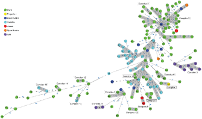

PO1 - Comparative
Genomics Provides Insight In The Evolution Of Antimicrobial Resistance In
Canine Methicillin-resistant Staphylococcus
pseudintermedius
Birgitta Duim1; Jaap A. Wagenaar1; Mirlin Spaninks1;
Arjen Timmerman1; Els M. Broens1; Aldert Zomer1
1Utrecht University/Faculty of Veterinary Medicine
Background: Staphylococcus
pseudintermedius is a significant pathogen in dogs and cats and is
occasionally associated with infections in humans. Methicillin-resistant
strains (MRSP), often resistant to three or more antimicrobial classes
(multi-drug resistance; MDR) have emerged since 2004. Recent studies in our lab
showed that the majority of MDR MRPS belonged to clonal complex (CC) CC71 and
to a lesser extend to CC258 or CC45, and that since 2011 less resistant
isolates were obtained from dogs. The aim of this study was to investigate how
recombination and mobile genetic elements shape the resistance dynamics in
different MRSP lineages.
Methods: At the
Veterinary Microbiological Diagnostic Centre (VMDC) of Utrecht University, 478
MDR MRSP strains were isolated from canine infections from 2004 to 2014. Fifty
MRSP strains, all with a unique MDR profile, with resistances to maximum 8
antimicrobial classes were selected for whole genome sequencing using Illumina
Miseq. Genomes were annotated; orthologous relations between genes were
determined using Orthagogue. The Harvest suite was used for core-genome
alignment and reconstruction single-nucleotide polymorphism (SNP) based
phylogeny. Recombination and gene flow was studied using Gubbins.
Results:
Phylogenetic analysis showed highly conserved genomes of MRSP belonging to CC71
and CC45. Recombination was detected in CC258 and hardly in CC71 and CC45. In
all strains mobile genetic elements associated with resistance genes were
present. Regions of horizontal transfer were identified and all relevant
recombination events will be presented.
Conclusion: Whole
genome sequencing identifies the evolution of antimicrobial resistance in MRSP
and may provide insight in how antimicrobials can co-select for multi-resistant
strains.
PO2 - Comparison Of
Fully Sequenced Genomes From Clinical And Non-clininal Enterococcus faecium Strains
Young-Hee Jung1; Taesoo Kwon1; Won Kim2
1Korea National Institute of Health,2 Seoul
National University
Keywords: comparative genomics, candidate of therapy, difference between
clinic and nonclinic
Background: Enterococci habit in gastrointestinal tract of
humans and animals and have been known as an opportunistic pathogen in chronic
patients. Most of vancomycin-resistant enterococci (VRE) are E. faecium
and are resistant to high-level vancomycin. In recent, vaccine candidates have
been under development to treat VRE. Therefore, we investigated the difference
between clinical and nonclinical strains in genome level to search the
candidate genes for VRE treatment.
Materials and methods: Four completed genome sequences of E.
faecium (one clinical VSE, two clinical VRE, one food-born VSE) were
download from NCBI and were analyzed using genome sequences of E. faecium DO as
a reference sequence. Multiple sequence alignment analysis were performed on
the proteins under 80% homology.
Results: We divided the proteins into six groups
according to the homology. Two proteins have 0~10% homology, 10~70% in seven
proteins, 70~80% in four proteins, 80~90% in ten proteins, paralog in 97
proteins, over 90% in 267 proteins, and the rest of the proteins have
difference among the clinical genomes. Twelve proteins were selected as the
candidates by multiple sequence alignment analysis. The proteins under 80%
homology are related to ABC transporter, beta-lactamase, cell wall or carbohydrate
metabolism.
Conclusion: We analyzed four completed genome sequences of
one clinical E. faecium, two clinical VRE, and one food-born E.
faecium and we suggested the candidates of therapeutic agents to treat
enterococcal infection including VRE using the difference of clinical and
nonclinical genomes.
PO3 - Phylogeny Of Mycobacterium leprae Using Whole Genome
Sequencing
Andrej Benjak1; Charlotte Avanzi1; Chloé Loiseau1;
Philippe Busso1; Pushpendra Singh2; Stewart Cole1
1Global Health Institute, EPFL,2 Louisiana
State University - School of Veterinary Medicine
Keywords: Mycobacterium leprae, phylogeny, SNPs
Background: Mycobacterium
leprae strains have remarkably conserved genomes. Our objective is to
characterize the M. leprae´s genomic variability by whole genome
sequencing and to better understand the microevolution of this species. The
biggest challenge to this effort is the in vitro uncultivability of M.
leprae and the inadequate amounts of M. leprae’s DNA obtained from
skin biopsies using standard DNA extraction protocols. As consequence, genomic
resources for this species are very scarce.
Materials |
Methods: Total DNA was extracted from mouse food-pad
samples while a host-depletion step was applied on most biopsy samples prior
DNA extraction. Samples with low abundance of M. leprae DNA were
additionally enriched using whole-genome array capture. Illumina libraries were
sequenced either on HiSeq or MiSeq platforms. Reads were adapter-trimmed and
quality-trimmed and mapped against the M. leprae reference genome
sequence. High quality SNPs were inferred from the alignments by applying
stringent coverage and quality thresholds.
Results: Thanks to
our considerably improved DNA extraction and enrichment methods, we have
successfully sequenced over 150 M. leprae strains deriving from
different locations around the world, using high-throughput sequencing. We have
identified 2,810 SNP loci, which enabled an accurate phylogenetic analysis and
a more refined SNP-based classification of strains. Correlation patterns were
observed for geographic locations and drug resistance.
Conclusion: We are
establishing a genomic database representing the global diversity of M.
leprae strains. The new genomic resource will facilitate studies on M.
leprae, with the ultimate goal of eradicating this pathogen.
PO4 - In Silico Comparison Serotyping And
Genotyping Methods For C.trachomatis.
Zhanna Amirbekova1; Dmitriy Babenko1
1Karaganda State Medical University
Background: Chlamydia
trachomatis is a cause of the most prevalent sexually transmitted bacterial
infections with 89 million cases annually worldwide (Gaydos et al., 2004) and
is responsible for both asymptomatic and wide spectrum of
clinically significant diseases (Manavi , 2006).
Based on
serological typing using antibodies against the major outer-membrane protein
(MOMP) there are 19 prototypic serovars of C.trachomatis. Compared to
immunotyping, the genotyping methods have some advances being more precise, sensitive
and specific for typing of C. trachomatis (Molano et al., 2004). The aims
of the present study were to compare phenotypic and genotypic methods for
subspecies identification of C.trachomatis in term of discriminatory power and
concordance.
Materials |
Methods: The datatable of Chlamydia trachomatis isolates with identified serovars/genovars and
sequence types (ST) was used for analysis (http://pubmlst.org/). Clonal
relationships of ST defined with minimum spanning tree using BURST algorithms
(MLVAcompare (Ridom GmbH)). Diversity and concordance between typing
methods were calculated using Simpson index and adjusted Rand and Wallace
coefficients (http://www.comparingpartitions.info).
Results: There were
3691 strains of C.trachomatis in datatable. For 3242 isolates serovar/genovar
were determined. Sequence type based on 7 loci (MLST Chlamydiales scheme) and 5
loci (MLST Uppsala scheme) were identified for 512 and 3277 isolates
respectively. Discriminant power of each typing method and concordance are
presented in table1.
Table 1.
Resolution ability and concordance between serotyping (MOMP)/genotyping (ompA
gene) and MLST methods.
|
Typing
method |
#
Different types |
Simpson
index (95%
CI) |
Adjusted Rand´s coefficient |
|
Serovar/genovar (n=3242) |
27 |
0.822 [0.814 - 0.831] |
1 |
|
MLST (Uppsala) (n=3277) |
519 |
0.974 [0.972 - 0.976] |
|
|
MLST (Chlamydiales) (n=512) |
58 |
0.903 [0.893 - 0.914] |
0.609 (n=49) |
Adjusted Wallace
coefficients were 0.096 for W1(serovar/genovar -> MLST (Uppsala)) and
0.793 for W2 (MLST (Uppsala) -> serovar/genovar). In the case with
serovar/genovar and MLST (Chlamydiales) the W1 was 0.758, and W2 was
0.508. Clonal complexes (CC) of MLST and their characteristics including
pairwise agreement between CC and serovars/genovars are presented in figure 1.
Conclusion: Our results
showed the higher level of discriminatory power of MLST in comparison with
serotyping The highest resolution ability (97.4%) had Uppsala scheme MLST using
5 loci. In spite of weak/moderate degree of global congruence between
serovars/genovars and sequence types (adj.Rand in table 1.) there was greater
concordance for clonal complexes with more than 90% successive prediction using
serovars/genovars (W1 coefficients in figure1). Interestingly, MLST typing
method demonstrated clonal population structure of C.trachomatis.

PO5 - Investigation Of
The Austrian LA-MRSA Population By Whole Genome Sequence Based Typing
Sarah Lepuschitz1; Burkhard Springer1; Alexander
Indra1; Franz Allerberger1; Werner Ruppitsch1
1Austrian Agency for Health and Food Safety
Background: In Austria,
the National Reference Laboratory for Staphylococci (NRLS) at the Austrian
Agency for Health and Food Safety (AGES) observed a steady increase of
infections caused by human CC398 LA-MRSA isolates from 0.2% in 2004 to 7.9% in
2015.
Since the majority
of Austrian LA-MRSA isolates harbor spa-type t011 an arbitrary
collection of isolates was analyzed by next generation sequencing in order to
evaluate the performance and discriminatory power of NGS.
Material/Methods: Genomic DNA
was isolated using theMagAttract HMW DNA Kit according to the instructions of
the manufacturer (Qiagen, Hilden, Germany) from an arbitrary collection of 153
LA-MRSA isolates (14 animal, 20 food, 20 environment, 99 human) collected in
Austria from 2004 to 2015 comprising spa-types t011 (n=134), t034 (n=14)
and t108 (n=5). The fragment library was constructed with the NexteraXT Kit and
2x300 basepair fragments were sequenced on a MiSeq (Illumina Inc., USA). Raw
reads were de-novo assembled using Velvet version 1.1.04. Contigs were filtered
for a minimum coverage of 5 and a minimum length of 200 bp. A core genome
(cg)MLST scheme comprising 1,862 target genes and a cluster threshold (CT) of
15 was used for NGS data interpretation using SeqSphere+ (Ridom,
Germany) (1).
Results: Core genome
(cg)MLST based typing distinguished 15 different complexes and 41 isolates not
assignable to a complex (Figure). Isolates belonging to spa-type t011
differed from isolates of spa-type t034 by at least 60 alleles and from
isolates of spa-type t108 by at least 86 alleles. Isolates belonging to spa-type
t034 showed from spa-type t108 an allelic difference of 26. The allelic
differences were up to 71 between spa-type t011 isolates, 92 between spa-type
t034 isolates and 36 between spa-type t108 isolates. Closely related
human-human, pig-human, and environmental-human isolates were identified by
cgMLST based NGS.
Conclusions: In
conclusion NGS based typing allows the differentiation of the highly clonal
LA-MRSA population in Austria as determined by spa-typing. This
improvement in typing will now allow to monitor the evolution of strains, the
identification of potential transmission routes, the identification of
outbreaks and the identification of resistance and virulence determinants and
as a consequence the emergence of more virulent clones.
Thus, the
application of NGS based typing is highly recommended for the public health
sector to improve MRSA surveillance.
References: Leopold S,
et al. (2014) J Clin Microbiol 52:2365–2370.

PO7 - Water On The Lungs
- Characterisation Of Pathogens In Pleural Effusion By The Use Of Metagenomic
Sequencing
Anna Maria Malberg Tetzschner1
1Department of Systems Biology, The technical
university of Denmark
Background: Lung
effusion is a common complication for patients hospitalized with pneumonia.
Fast and adequate treatment is important for fast recovery and survival, and it
relies solely on rapid characterization of the pathogen causing the disease.
Unfortunately, the clinical microbiology practice is labor intensive and it can
take days or even weeks to determine the pathogen.
In this study we
aim to develop a new method to improve and accelerate the detection and
characterization the infectious pathogen in patients suffering from lung
effusion by the use of direct sequencing on clinical sample.
Methods: At the
hospital we collect pleural fluid by drainage from patients with pleural
effusion. DNA is purified directly from the clinical samples, and several steps
are used to remove the human contamination prior to sequencing.
After sequencing
the raw reads are trimmed and then mapped against predefined databases by the use of the MGmapper
software (https://cge.cbs.dtu.dk/services/MGmapper/). Firstly
the raw reads are mapped against a human genome, thereby removing any human
contamination. The remaining unmapped reads are mapped against several
databases containing complete and draft bacterial, fungal protozoan and viral
genomes. The remaining reads that do not match anything will be mapped against
the complete nucleotide database.
In order to obtain
detailed characteristics of the pathogenic strain, the raw reads are mapped
against databases containing virulence and resistance genes.
Finally a report
will be generated containing information for diagnosis to be made. This will
include abundance profiles of the strains, virulence factors and resistance
markers.
PO8 - Examination Of
Metagenomic Analysis For Typing Of Campylobacter
In A Cultureless Future Using Present-day Technology
Katrine Grimstrup Joensen1; Søren Persson1
1Statens Serum Institut
Background: Hospitals
are increasingly using PCR diagnostics directly on clinical samples instead of
culturing, due to lower cost as well as higher sensitivity and speed. The lack
of culturing presents a problem in the public health surveillance of pathogens
that traditionally depends on isolates for molecular typing methods, including
WGS. One approach to maintain public health surveillance without culturing
would be metagenomics sequencing of patient samples.
Materials/methods: Human and
chicken fecal samples (negative for Campylobacter by culturing and PCR)
were spiked with 10-fold dilutions of 10^5 to 10^8 cfu/g of C. jejuni
SC181. We sequenced each of the sub-samples, including non-spiked controls, on
an Illumina MiSeq, using 250bp paired-end reads and 1/8 of a flowcell for each.
The sequences were analysed using Kraken (https://ccb.jhu.edu/software/kraken/) and plasmid and phage
sequences were filtered out. The sequences matching Campylobacter
in each of the sub-samples were compared using blastn to estimate the size of
the overlap.
Results: We detected
446 and 58 Campylobacter reads in the human 10^7 and 10^8 sub-samples,
respectively. Of these, we were able to assign 64% and 53%, respectively, of
the reads to the SC181 strain. We detected 5118 and 254 Campylobacter reads
in the 10^6 and 10^5 chicken sub-samples, respectively, of which 8% and 7% were
specific for strain SC181. In the human control sample no Campylobacter reads
were detected, whereas a single read was detected in the chicken control
sample. We compared the SC181 sequences detected in the different sub-samples
and found overlaps ranging from 4101bp to 183027bp (see table).
Table: Number of basepairs overlapping between Campylobacter reads
in samples spiked with different levels of Campylobacter. Probability of
observing an individual SNP in parenthesis.
|
Human, 108
cfu/g |
Human, 107
cfu/g |
Chicken, 106
cfu/g |
Chicken, 105
cfu/g |
|
|
Human, 108
cfu/g |
- |
|||
|
Human, 107
cfu/g |
4101 (1:365) |
- |
||
|
Chicken, 106
cfu/g |
127598 (1:12) |
19278 (1:78) |
- |
|
|
Chicken, 105
cfu/g |
15039 (1:100) |
2615 (1:574) |
183027 (1:8) |
- |
Conclusion: This shows
that we will be able to identify a known outbreak strain directly in fecal
samples containing a load of infection above 10^5 cfu/g. Another issue is if we
will be able to compare the identified sequences from the metagenomics samples,
and estimate how different the strains are. With the loads and sequencing
depths we have investigated in this study, it would not be enough for outbreak
detection, although with the detection of 1/8 of the genome it is getting
close.
PO9 - The Role Of
Surface Adhesins In Epidemic Hypervirulent Clostridium
difficile BI/NAP1/027 Strain And Non-epidemic Strain Virulence And Bio
SOZA BABAN1
1University Of Nottingham
Clostridium difficile is a
major cause of healthcare-associated infection and inflicts a considerable financial
burden on healthcare systems worldwide.Disease symptoms range from
self-limiting diarrhoea to fatal pseudomembranous colitis.Whilst C.difficile has
two major virulence factors, toxin A and B,it is generally accepted that other
virulence components of the bacterium contribute to disease.C.difficile colonises
the gut of humans and hence the processes of adherence and colonisation are
essential for disease onset.Bacteria within biofilms are protected from
multiple stresses,including immune responses and antimicrobial agents.
Increased antibiotic resistance and chronic recurrent infections have been
attributed to the ability of bacterial pathogens to form biofilms.While
biofilms have been well studied for several gut pathogens, little is known
about biofilm formation by anaerobic gut species.Numerous cell surface proteins
and surface structures such as flagella have been shown to be important for
biofilm formation in this Gram-positive pathogen. This study investigated for
the first time the role of surface adhesion genes in virulence of two important
C.difficile isolates; non-epidemic historical C.difficile
PCR-ribotype012 and newly emerged hypervirulent C.difficileBI/NAP1/027
strain which caused large outbreaks ofCDAD worldwide.Non-motile, paralyzed-flagellated
and non-flagellated mutants were created using ClosTron and Allelic-exchange
mutagenesis technologies.Our work demonstrates the ability of epidemic pathogen
to form complex biofilms and the involvement of important clostridial pathways
in biofilm development.Importantly,thebacterial sensitivity to antibiotics is
reduced in clostridial biofilms. Biofilm formation may be a mechanism employed
by C.difficile to survive in environment such as human gut.We compared
the flagellated wild-type to a mutant with a paralyzed flagellum and also to
non-flagellated in vitro and in vivo.This study
provides the first strong evidence that by disabling the motor of the
flagellum, the structural components of the flagellum rather than active
motility, is needed for adherence and colonisation by hypervirulent strain.The
hypervirulent epidemic flagellar mutants adhered less than the parental
strain in vitro, whereas we saw the opposite in 630Δerm. In the
later strain we showed that flagella and motility are not needed for successful
colonisation in vivo. Finally we demonstrated that in in epidemic
strain, flagella do play a role in colonisation and adherence and that there
are striking differences between strains. The latter emphasises the
overriding need to characterize more than just one strain before drawing
general conclusions concerning specific mechanisms of pathogenesis.In addition,
the hypervirulent strain, form structured biofilms in vitro.Biofilm
formation by C.difficile is a complex multifactorial process and may be
a crucial mechanism for clostridial persistence in the host.
PO10 - Bifidobacterium bifidum YIT 10347
Suppress Gut Microbiota Dysbiosis And Alleviate Severe Diarrhea In Helicobacter pylori Eradication Therapy
Toshifumi Ohkusa1; Takao Osaki2; Hideo Yonezawa2;
Shigeru Kamiya2
1Department of gastroenterology and Hepatology, The
Jikei University Kashiwa Hospital,2 Department of Infectious
Diseases, Kyorin University School of Medicine
Background: An
antibiotics-associated diarrhea (AAD) following Helicobacter pylori
eradication therapy is most side effects and may be due to gut microbiota
dysbiosis. However, it has not been a metagenomic analysis study about diarrhea
in Helicobacter pylori eradication therapy and gut microbiota dysbiosis.
We conducted a randomized double-blind placebo-controlled clinical trial to
examine the effect of probiotic Bifidobacterium bifidum YIT 10347 on H.
pylori eradication, diarrhea, and gut microbiota dysbiosis.
Patients and
Methods: 228 Japanese patients 228 patients were divided into active drug and
placebo groups at random, and ingested 100 ml of either fermented milk
containing B. bifidum YIT 10347 (active group) or non-fermented milk
(placebo group) once daily for 17 weeks. Triple therapy of lansoprazole 30 mg
bid, amoxicillin 750 mg bid, and clarithromycin 200 mg bid (LAC) was treated at
week 8 for 1 week to eradicate H. pylori. Side effects and rate of
eradication were evaluated. Gut microbiota of 105 participants (active group:
49 subjects, placebo group: 56 subjects) selected randomly were analyzed on 8,
9, and 17 weeks by 16S rDNA metagenomics sequencing and the UniFrac index was
used to evaluate gut microbiota dysbiosis.
Results: H. pylori eradication rate and the
occurrence of side effects did not significantly differ between the groups,
except that the occurrence of severe diarrhea (4 times a day or more of
diarrhea) was significantly lower in the active group. Gut microbiota dysbiosis
occurred in both the group, but the increase in the UniFrac index on 17 weeks
was significantly suppressed in the active group. B. bifidum YIT 10347
suppressed decrease of Bifidobacteriaceae and increase of Bacteroidaceae and
alleviated decrease of Firmicutes phylum like Lachnospiraceae on 9 weeks.
Recovery of gut microbiota was significantly earlier in the active group than
in the placebo group on 17 weeks.
Conclusion: In the H.
pylori eradication LAC therapy, ingestion of probiotic B. bifidum
YIT 10347 alleviated of severe AAD by suppression of gut microbiota dysbiosis.